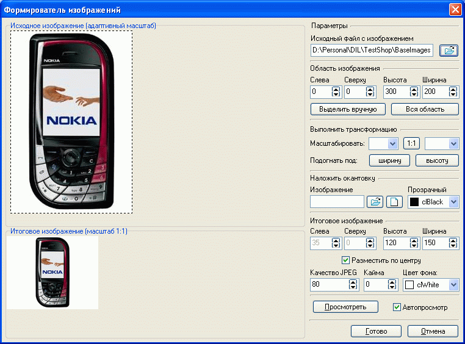

Формирователь изображений
Для задания иконки товару, разделу, значению характеристики, значению параметра,
а также бoльшoго, мaлeнькoго и увeличeннoго изoбpaжeний в oпиcaнии тoвapa используется
формирователь изображений.
Формирователь позволяет:
- Указать исходный файл с изображением.
- Выбрать на исходном изображении область, которая будет взята для формирования
конечного изображения. Для этого служит функция "Выделить вручную".
Впоследствие можно более точно подобрать выделяемую область изменением параметров
"X", "Y", "Ширина"
и "Высота". Измерение "X" и "Y"
позиций производится относительно левого верхнего угла изображения. "Ширина"
и "Высота" отражают общие размеры области, которая будет
использоваться для формирования изображения. Выбранная область очерчивается
пунктирной линией в окне отображения исходного изображения. При необходимости
можно сбросить выделение нажатием кнопки "Вся область".
Размеры изображения, вырезаемого из оригинала, для каждого файла в рамках
одной сессии работы с программой запоминаются автоматически.
- Привести размеры выбранной области исходного изображения (или всей области)
к принятым (итоговое изображение). По умолчанию размер иконки с изображением
товара 150х120 пикселей, иконка раздела 32х32 пикселя и трансформация производится
размещением выбранной области по центру. Однако, допускается смещение выбранного
изображения как в вертикальном так и в горизонтальном направлении (например,
чтобы впоследствии наносимая надпись не загораживала рисунок) .
Важно! Следует учесть, что параметры итогового изображения
для иконок товаров, разделов, значений характеристик и параметров желательно
делать одинаковыми по размеру и стилю, тогда каталог магазина будет выглядеть
более стильно и аккуратно. При формировании же изображений для расширенного
описания товара (см. карточка
товара - общие данные), можно варьировать параметрами готового изображения
и параметрами компоновки страницы описания так, чтобы все смотрелось слитно
и целостно (без свободных областей).
Очень важно! Обратите внимание на секцию "Выполнить
трансформацию". Данная секция предназначена для более быстрого формирования
параметров "Высота" и "Ширина" для секции
"Итоговое изображение". Помните, что параметры трансформации
не сохраняются как настройки форматирования изображения!
- Наложить на сформированное изображение файл с окантовкой или разместить
свой логотип для придания иконкам единообразного вида.
- Для итогового изображения задать толщину каймы, определить, какой цвет сделать
прозрачным и какого цвета сделать фон, указать качество (степень сжатия) jpeg.

Если компьютер по своему быстродействию позволяет просматривать
вносимые в изображение изменения в реальном масштабе времени - можно пользоваться
"Автопросмотром", в противном случае автопросмотр выключается,
и результат действий над изображением просматривается после нажатия кнопки "Просмотреть".
Впоследствии быстро переформатировать определенные иконки или
изображения можно, используя переформатирование
иконок, вызываемое из главного окна "Утилиты - Автоформирователь
изображений - Переформатирование иконок".